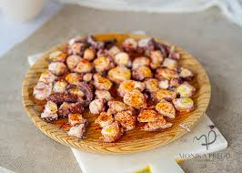

Gastronomía de La Coruña
La gastronomía coruñesa es un reflejo de su territorio: mar, tierra y tradición. Sus productos frescos del Atlántico y la huerta gallega hacen de esta provincia un destino imprescindible para los amantes de la buena mesa.
Cómo preparar Pulpo á Feira
- Cocer el pulpo en agua hirviendo durante 40 minutos aproximadamente.
- Dejar reposar 10 minutos fuera del fuego.
- Cortar en rodajas sobre una tabla de madera con tijeras.
- Aliñar con aceite de oliva virgen extra, pimentón dulce y sal gruesa.
- Servir sobre cachelos (patatas cocidas con piel).
Platos típicos de la provincia
- Pulpo á Feira
- Empanada gallega
- Empanada de atún
- Empanada de zamburiñas
- Empanada de bacalao con pasas
- Lacón con grelos
- Caldo gallego
- Merluza en salsa verde
Glosario gastronómico gallego
- Zamburiña
- Pequeño molusco bivalvo del Atlántico, similar a la vieira pero más pequeño, muy apreciado en la cocina gallega.
- Cachelos
- Patatas cocidas con piel, típicas de Galicia, que se sirven como acompañamiento del pulpo á feira y otros platos.
- Grelos
- Hojas y tallos tiernos del nabo, verdura característica de la cocina gallega, protagonistas del caldo gallego y el lacón con grelos.
- Orujo
- Aguardiente gallego destilado del orujo de la uva, puede ser blanco, de hierbas o de miel. Muy habitual como digestivo.
Restaurantes destacados de La Coruña
| Restaurante | Especialidad |
|---|---|
| Casa Pardo | Mariscos y pescados del Atlántico |
| A Mundiña | Cocina gallega tradicional |
| Taberna de Cunqueiro | Cocina de autor con producto local |
| O Fragón | Pulpo á feira y empanadas artesanas |
Imágenes y vídeos gastronómicos
